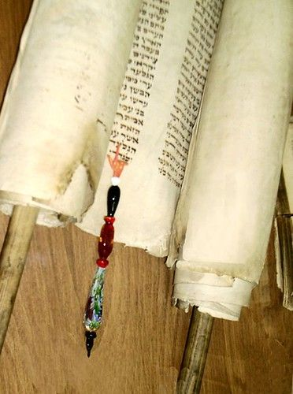

6 Letters in 1 Word Bereshit Check for You
Every book has a first word. The first word of the Bible, in Hebrew, is one word made of six letters: Bereshit.
Every book has a first word. The first word of the Bible, in Hebrew, is one word made of six letters: Bereshit. The King James text needs three English words to say it: "In the beginning." That one Hebrew word does a lot of work. It names the start of all things. It gives the whole first book of the Bible its Hebrew name, for Hebrew books are named by their first word. And it hides a small grammar twist that teachers have talked about for a very long time: word for word, it says "in beginning of," and then leans on the words that come next. This post takes the word apart slow: letter by letter, part by part, with plain words, from the Hebrew text itself. No secret codes. No claims the word does not carry. Just the word, read with care.
Bereshit is the first word of Genesis 1:1 and means "in the beginning." It is built from two parts: the small prefix be, which means "in" or "at," and the word reshit, which means beginning, first, or firstfruits, and comes from rosh, the word for head. The whole word has six letters: bet, resh, alef, shin, yod, tav. In strict grammar it stands in what teachers call the construct form, so it reads "in the beginning of," tied to what follows: "In the beginning of, God created the heaven and the earth." The King James text smooths that lean into "In the beginning God created," and most readers down the ages have read it just that way, though some newer translations render the lean openly. Either way, the sense the word carries is the same door: before the heaven and the earth stood, God was, and God acted first.
What are the six letters of Bereshit?

The Hebrew word is written with six letters. Hebrew reads from right to left, the other way from English, so the first letter stands at the right end of the word. The six letters, in order, are: bet, resh, alef, shin, yod, tav.
Bet is the second letter of the Hebrew alphabet. That fact has been marked for a long time: the Bible does not start with alef, the first letter. It starts with bet. Teachers of old asked why, and gave more than one answer, and we will not pretend one answer is the text's own. The text just starts with bet, and the mark is worth making: the story opens one step in, as if to say the start we are given is the start of the world, not the start of God. God has no start in this book. He is simply there when the first word lands.
Resh is the first letter of rosh, head, and of reshit itself. Alef is the first letter of the alphabet, a silent letter in this word, there in the spelling but not heard as its own sound. Shin is a strong hushing letter, the sh sound. Yod is a small letter, the y sound, the smallest mark of the six. Tav is the last letter of the Hebrew alphabet, the t sound. So the first word of the Bible runs from bet to tav, and holds alef, the first letter, inside it, in third place. That is a fact of spelling. We state it as a fact of spelling, and we build no secret code on it. Some teachers love to split the word into small words they find in it, like bar, son, or brit, covenant, and esh, fire. Those letter games are old and much loved, but they are games played on the word, not the word's own grammar, and this site will not sell them to you as what the word means. What the word means comes from its parts, and its parts are plain, as the next part shows.
What are the two parts of the word?

Bereshit is two parts joined in one skin.
Part one is be. In Hebrew, be is a small prefix, a bit stuck on the front of a word, and it means in, at, or with. A prefix is a piece added at the start of a word that shifts its sense, like the un in unhappy or the re in reread. Here the prefix is one letter, bet, used as a tool word. Bet as a full letter starts the word, and bet as a prefix does the work of "in."
Part two is reshit. Reshit means beginning, first, best part, or firstfruits. Firstfruits is an old farm word: the first ripe part of a crop, given to God before the rest is used. The word reshit is used that way in the Law: the first of the firstfruits is brought to the house of the LORD. It is also used for the start of a thing: in Proverbs, wisdom says the LORD held her "in the beginning of his way," reshit darko, before His works of old. And Israel is called the LORD's reshit, His firstfruits, in the book of Jeremiah. So reshit is not a cold time word only. It can mean the head start of a thing, and the choice first part of a thing, the part that stands for the whole.
Under reshit stands rosh. Rosh means head: the head of a body, the head of a tribe, the top of a hill, the first of a list. English does the same trick with its own word head: the head of a house, the head of a line, head first. When you hear "in the beginning," hear the head in it: God sets Himself at the head of all things in the first word of His book. The world has a head, and the head is not the world. The head is God, who speaks next: bara Elohim, God created.

Why do teachers say the word leans forward?
This is the hardest idea in this post, so we will say it two ways.
In Hebrew grammar, some words change their shape when they lean on the word after them. Teachers call this the construct form. Construct is a hard word for a plain thing: the word is built to lean. "Beginning," standing free, would be one shape. "Beginning of," leaning on what comes next, is the shape we have here: reshit in bereshit leans. Also, the word has no "the" on it. The Hebrew for "the beginning" as a free-standing phrase would carry a mark that this word does not carry. So, read with strict grammar, the first line leans like this: "In the beginning of, God created the heaven and the earth," or, as some put it, "When God began to create the heaven and the earth." Some newer English translations print it that way. The King James men read it as a full free claim, "In the beginning God created," and most synagogues and churches down the ages have read it with them.
First way to hold it: think of a hook on a wall. A hook is not the whole rack. It is made to hold what hangs on it. Bereshit is a hook word. It hangs the whole first verse on itself: in the beginning of — of what? Of God creating the heaven and the earth. The lean is not a flaw. The lean is the shape: the start of the world is told as tied to God's act, not as a date floating free.
Second way: think of the words "the top of." Say "the top of" and your ear waits: the top of what? The words lean by their nature. "In the beginning of" leans in the same way. The Bible's first word makes your ear wait one beat, and then gives you God. That is a fine way for a book to start: the first thing you learn is that beginnings hang on God.
What should you do with the difference between the translations? Hold both facts at once. Fact one: the grammar of the word leans; that is what the Hebrew shows. Fact two: the sense is not in doubt among honest readers — the verse puts God first, acting, before any made thing stands. Where scholars differ is on how to print the lean in English, not on who made the heaven and the earth. We say that plainly, because on this site a difference is named as a difference, never smoothed over and never blown up.
What does the first verse look like in Hebrew, counted out?

Genesis 1:1 in Hebrew has seven words. Count them: Bereshit, bara, Elohim, et, hashamayim, ve'et, ha'aretz. In English: In the beginning, created, God, (a small marker word), the heaven, and, the earth. Seven words. The letters of those seven words add up to 28. Count them if you like; the count is a plain count, open to any reader with the Hebrew text. Seven is the number this first chapter will build on: six days of work and a seventh day of rest. That the first verse is built of seven words is a neat fit, and readers have marked it for ages. We mark it as a fit worth seeing, no more and no less.
Two of the seven words need a word of care. Bara, created, is the act word, and in the Hebrew Bible it is used with God as its doer. Et, the fourth word, is a small marker that points at the thing the act lands on. English has no word for it, so the King James text leaves it untranslated. It sits in the middle of the verse like a finger pointing: God created — this — the heaven. Hashamayim is the heavens or the sky; ha'aretz is the earth or the land. The King James text says "the heaven and the earth," and that pair, in Hebrew speech, can stand for the whole of all that is, the way we say "high and low" to mean every place. The first verse, then, in seven words, claims the whole: time, God, act, sky, and land. Nothing is left out of the claim, and no other god is named in it.
The first book of the Bible is called Bereshit in Hebrew to this day. Hebrew books take their names from their first word or first big word: the second book is Shemot, Names, from "these are the names." So when a Hebrew reader says "Bereshit," he may mean the first word, the first verse's start, the first weekly portion of the year, which runs from Genesis 1:1 to 6:8, or the whole first book. One word, four uses, all tied to the start. And the yearly reading ends and rolls back to this word each year: the end of the scroll is read, and at once the start is read again. The last word of the Torah and the first word stand side by side for one day, and then the year walks forward from Bereshit once more.
What does this word ask of the reader?
A small word can set a big rule. Bereshit sets this one: start where the book starts. Do not start with man. Do not start with the world. Start with God, at the head, acting first. Every hard line later in the book — the garden, the flood, the call of Abram — hangs on this first hook: God was, God made, God speaks, and the world answers.
It also sets a pace. One word took us a whole post. That is the pace of this site: word by word, verse by verse, chapter by chapter, from the oldest texts we can hold: the Hebrew Bible, the old copies found by the Dead Sea, which hold parts of Genesis copied out more than two thousand years ago, and the King James text in English. Where those wells agree, we drink deep. Where readers differ, we say so. We add nothing the text does not carry, because a word this strong does not need our help to be strong.
Checklist:
- Say the six letters of Bereshit in order: bet, resh, alef, shin, yod, tav
- Split the word into its two parts, be and reshit, and say what each part means
- Name the root word rosh and its plain sense: head, top, first
- Read Genesis 1:1 in Hebrew word count: seven words, and name the marker word et that English leaves out
- Write one line on the lean of the word: "in the beginning of," and what the verse hangs on that hook

Your free tool for this step
Use the Companion Pack on The Right Way site. You can find it here: https://therightway.life/tools/companion-pack.html
The Companion Pack is a free pack of study sheets that go with the chapters and the word studies on this site. This post is a word study, and the pack is where word studies are kept in one place for your own reading time. Here is how to use it for this step. Open the pack and find the sheet for Bereshit. Keep it next to your Bible as you read Genesis 1:1 again. The sheet holds the six letters in order, the two parts of the word, and the root rosh, so you do not have to hold them all in your head at once. Write your own one-line note on the sheet: what the lean of the word, "in the beginning of," says to you. Your note, in your words, is the part of the sheet that will still help you a year from now.
The pack does not read the verse for you, and it does not add claims the text does not carry. It does one plain job: it keeps the word facts in one clean place, so slow study is easy to pick up again. Everything on this site is free. This work is kept free for every reader, and some readers give toward the labor of making it. That is the only way it is kept going.
The bottom line
Bereshit is six letters and two parts: be, in, and reshit, beginning, first, firstfruits, from rosh, head. It is the first word of the Bible and the Hebrew name of its first book. Its grammar leans forward — "in the beginning of" — and the whole verse hangs on that hook: God created the heaven and the earth. The King James text prints it smooth, some newer texts print the lean, and honest readers name the difference and read on. Start where the book starts: God at the head, acting first. Then go to the verse whole, and let the seven words of Genesis 1:1 open the seven days.